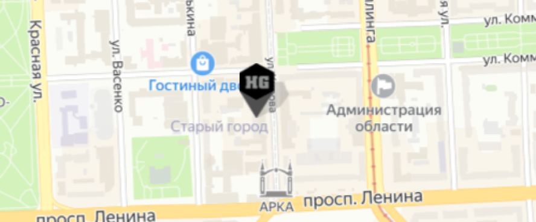
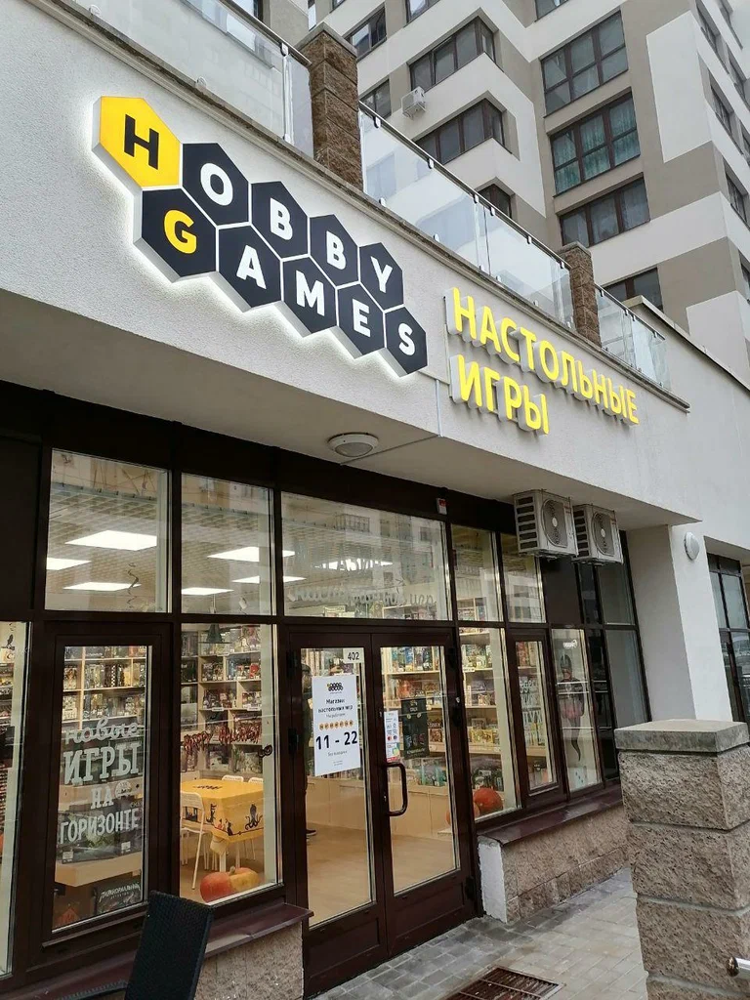
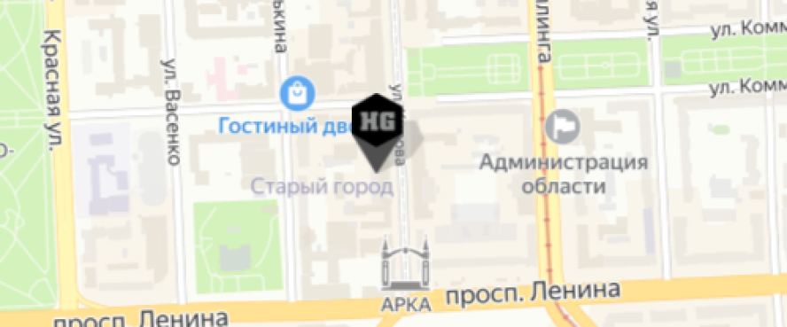

Hobby Games – Челябинск, на улице Кирова
 г. Челябинск, ул. Кирова, д. 110
г. Челябинск, ул. Кирова, д. 110
Hobby Games – это сеть фирменных магазинов, в которых представлен широчайший ассортимент настольных игр. К нам приходят как преданные фанаты этого хобби, так и те, кто только начинает с ним знакомиться.
Магазины под брендом Hobby Games открываются с 2009 года в крупнейших городах России и СНГ, и сейчас их уже больше сотни: вы можете приобрести у нас игры в Москве, Санкт-Петербурге, Новосибирске, Казани, Екатеринбурге, Минске и многих других городах.

Hobby Games – это интернет-магазин настольных игр и аксессуаров, а также широкая сеть розничных магазинов по всей России и странам СНГ. У нас представлен широкий выбор самых разных настольных игр: от простых и весёлых игр для семьи или вечеринок до сложных стратегий или ролевых систем. Всего в нашем магазине более 7000 позиций!
На наших полках вы можете найти игры следующих брендов и производителей (и не только!)
Главное для нас – интересы клиентов, поэтому мы постоянно пополняем ассортимент наших магазинов актуальными новинками, заботимся о выгодных ценах и неустанно улучшаем сервис: качество обслуживания, сроки и доступность доставки и многое другое.
Постоянных покупателей может заинтересовать наша Бонусная программа, которая позволяет накапливать бонусные баллы за покупки и оплачивать ими до 15% следующих заказов.
Если вы знаете, как улучшить работу наших магазинов, – помогите узнать об этом и нам, отправив письмо на адрес client-service@hobbygames.ru

Hobby Games – Челябинск, на улице Кирова
г. Челябинск, ул. Кирова, д. 110